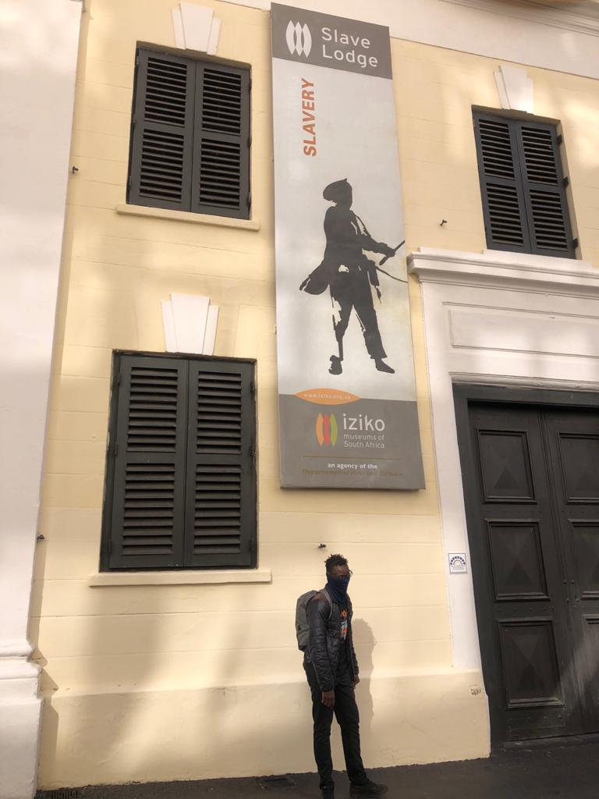
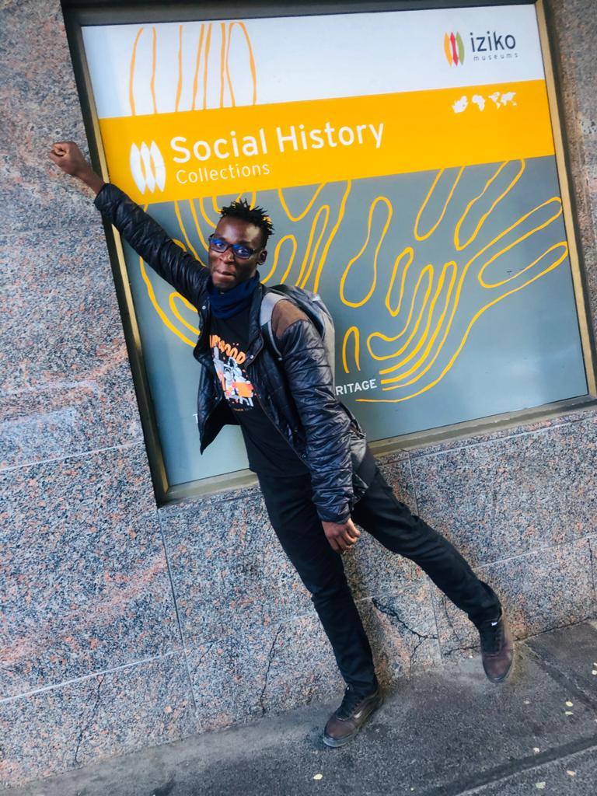
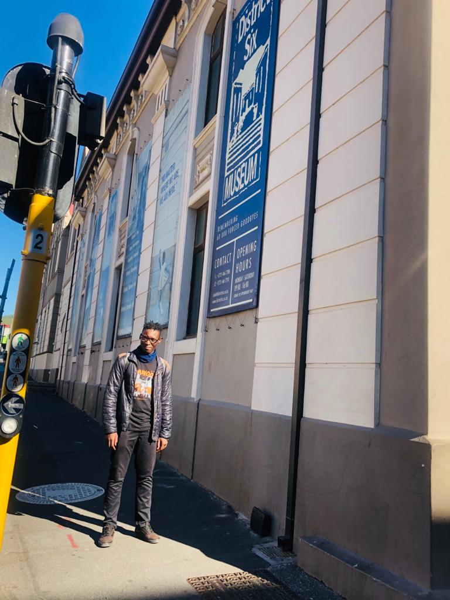

Mcebo Samuel Xaba 
Which City?
 Hong Kong is one of the most famous cities in the world. It has remained so for more than a decade and continues to
attract travelers. With an estimated 29.2 million visitors a year, the city has a stronghold over other cities in the world when it comes to attracting travelers.
Hong Kong is a convenient holiday destination, and its shopping, especially for bargains, is unmatched.
Hong Kong is a convenient holiday destination, and its shopping, especially for bargains, is unmatched.
Hong Kong is a convenient holiday destination, and its shopping, especially for bargains, is unmatched.
Hong Kong is one of the most famous cities in the world. It has remained so for more than a decade and continues to
attract travelers. With an estimated 29.2 million visitors a year, the city has a stronghold over other cities in the world when it comes to attracting travelers.
Hong Kong is a convenient holiday destination, and its shopping, especially for bargains, is unmatched.
Hong Kong is a convenient holiday destination, and its shopping, especially for bargains, is unmatched.
Hong Kong is a convenient holiday destination, and its shopping, especially for bargains, is unmatched.
A foreign language
Spanish: I'll be better able to communicate with Spanish speakers. I want to speak Spanish with one of my firends Boni.
| English Phrase | Spanish Phrase |
|---|---|
| I am sorry about yesterday | Lamento lo de ayer |
| I am lost and but I will find direction | Estoy perdido y encontraré dirección |
| CodeX is a great place for you to learn coding | CodeX es un gran lugar para aprender a codificar |
Historic places in Cape-Town
Iziko slave lodge
- The Slave Lodge was built in 1679.
- Today the Slave Lodge is a museum, managed by Iziko Museums of South Africa.
- The Slave Lodge housed the slaves who belonged to the Dutch East India Company (VOC).
Iziko Museum
- The Iziko South African Museum isa South African national museum located in Cape Town.
- The museum was founded in 1825, the first in the country.
- It has been on its present site in the Company's Garden since 1897.
District Six Museum
- Is a museum in them former innerCity residential area.
- Today the Slave Lodge is a museum, managed by Iziko Museums of South Africa.
- The Slave Lodge housed the slaves who belonged to the Dutch East India Company (VOC).